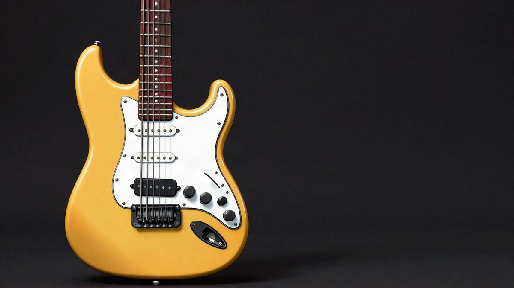

Meki robot iz 3D printera trči 17 km/h bez ikakve elektronike

Inženjeri s Kalifornijskog sveučilišta u San Diegu predstavili su šesteronožnog mekanog robota koji doseže 4,72 metra u sekundi, oko 17 km/h. Ispisan je na 3D printeru, ne sadrži elektroniku, a pokreće ga stlačeni zrak. Istraživači tvrde da je to najbrži robot izrađen isključivo od mekanih materijala.
Inženjeri s Kalifornijskog sveučilišta u San Diegu predstavili su šesteronožnog robota za kojeg tvrde da je najbrži robot izrađen isključivo od mekanih materijala. Doseže brzinu do 4,72 metra u sekundi, oko 17 km/h. Ispisuje se na 3D printeru u jednom prolazu iz jednog materijala, a za rad mu ne treba nikakva elektronika.
Robot trči po pijesku, malču i betonu, a može i plivati te se kretati po dnu pod vodom. Istraživači su ga testirali i na šljunku i travnjaku, a pokazali su da može sići niz stepenice, plivati i nastaviti raditi pod vodom. Razvijen je u Jacobs School of Engineering.
Od 4 cm/s do 4,72 m/s
Tim je krenuo od svojeg prvog mekanog robota na pneumatski pogon, izrađenog 3D printom 2022. godine, o kojem je 2025. objavljen rad u časopisu Science Robotics. Taj je robot bio spor, svega 4 centimetra u sekundi, jer su ga ograničavali tlak i protok zraka koje je mogao izdržati. Novu verziju vodili su postdoktorand Yichen Zhai i profesor Michael T. Tolley iz Bioinspired Robotics and Design Laboratory.
Unutar robota je sustav povezanih komora, ventila i cijevi. Noge se pokreću kad njima prolazi stlačeni zrak. Brzinu je najlakše povećati višim tlakom, pa je tim robota i njegove unutarnje dijelove morao povećati i ojačati da izdrže viši tlak i brži protok. Tada se pojavio novi problem. Pri velikoj brzini učinkovitost snažno pada, jer robot ispušta stlačeni zrak koji još sadrži mnogo energije.
Ideja iz parnog stroja
Za rješenje su iskoristili konstrukciju parnog stroja s višestrukom ekspanzijom, u kojem se para širi kroz više cilindara zaredom pa se energija radnog medija pod visokim tlakom bolje iskorištava. U robota su ugradili komore i ventile kroz koje zrak prolazi u dvije faze ekspanzije. Najprije ulazi u male komore visokog tlaka koje aktiviraju ventile, a zatim u veće komore niskog tlaka koje pokreću noge. Robot je zbog toga više od 100 puta brži od prve verzije iz 2022.
Ograničenja i planovi
Robot za sada radi samo dok je spojen na izvor stlačenog zraka, na primjer običan zračni kompresor. Istraživači žele razviti izvedbe koje troše manje zraka, pa bi se robot mogao kretati samostalno uz prijenosni izvor poput boce sa stlačenim zrakom. Razmatraju i modele sa složenijim kretanjem, koji bi mogli mijenjati smjer i rukovati predmetima.
Autori navode da bi se takvi roboti mogli koristiti ondje gdje elektronika ne radi, na primjer u istraživanjima na područjima s visokom radijacijom ili jakim magnetskim poljima, u saniranju posljedica izvanrednih situacija i u istraživanju svemira.
Izvor: Habr vijesti
Povezani članci
 Humanoidni robot Howl uči skupljati jaja s poda peradarnika, NC State cilja na 2027.17. studenoga 2026.
Humanoidni robot Howl uči skupljati jaja s poda peradarnika, NC State cilja na 2027.17. studenoga 2026.- Unitree H2-X: humanoidni robot koji tvrdi da može podići auto i izvoditi borilačke vještine22. listopada 2026.

Drakong InfinaKore: Telecaster gitara-kontroler za Guitar Hero i Fortnite Festival12. studenoga 2026.